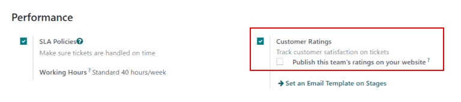
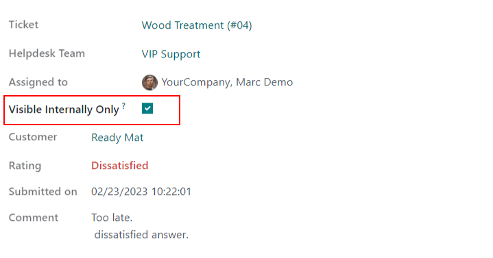

Customer ratings¶
Asking customers to rate the support they received from a Helpdesk team provides an opportunity to gauge team performance and track customer satisfaction. Ratings can be published to the portal, providing customers with a general overview of the team’s performance.
Enable customer ratings on a Helpdesk team¶
To enable customer ratings on a helpdesk team by going to . Select a team from the list and navigate to the settings page. Scroll to the Performance section, and check the box for Customer Ratings.
Set a ratings request email template on a stage¶
To automatically request ratings from customers once their tickets have closed, an email template should be added to the appropriate stage.
Once the Customer Ratings setting has been enabled on the team’s settings page, (see above) click the Set an Email Template on Stages link. Select a stage from the list, or click New to create a new stage.
Important
Customers should only be asked to rate tickets once an issue has been resolved and their ticket is closed. Therefore, a ratings request email should only be added to a stage that is folded in the kanban, as tickets in a folded stage are considered closed.
On the stage’s settings page, select Helpdesk: Ticket Rating Request in the Email
Template field. This template has been pre-configured with ratings customers can use to provide
feedback. To view the template, click the arrow button to the right of the field.
Once the template has been added to the stage, it will automatically send a message when a ticket is moved to that stage. Customers will be asked to rate the support they received with colored icons.
Green smiling face - Satisfied
Yellow neutral face - Okay
Red frowning face - Dissatisfied

After selecting a rating, customers are taken to a webpage where they can provide specific written feedback to support their rating. Once a rating is submitted, it is added to the chatter on the ticket.
Tip
Customer ratings can also be viewed through the Customer Ratings report. To view this report, go to .
See also
Publish ratings on the customer portal¶
After enabling the Customer Ratings setting, an option to publish ratings on the team’s website appears. Enabling this setting provides portal users with an overview of the ratings the team has received over the last thirty days. Specific written feedback will not be included; only statistics of the team’s performance will be visible.
Important
In order to display ratings on the customer portal, a team has to have their visibility setting set to Invited portal users and all internal users. This setting is found on the team’s settings page under Visibility.
Next, to publish the ratings, go to and select a team. Scroll to Performance and enable Publish this team’s ratings on your website.
To view the ratings for a team, a customer will log into the portal and navigate to one of their tickets. After clicking on the team name in the Managed By field, they will be directed to a page with the team’s ratings over the past thirty days.

Manually hide individual ratings¶
Individual ratings can be manually hidden from the portal. This allows for specific ratings to be kept out of the performance metrics that are shown to customers.
To make a rating visible only to internal users, navigate to the page for a rating. This can be done in one of the following ways:
Go to and click on one of the kanban cards for an individual rating.
Navigate to and remove the Open filter from the search bar. Then filter by Satisfied, Okay and/or Dissatisfied. Select a ticket from the results. Click the Rating smart button.
Once on the rating details page, check the Visible Internally Only box.
See also